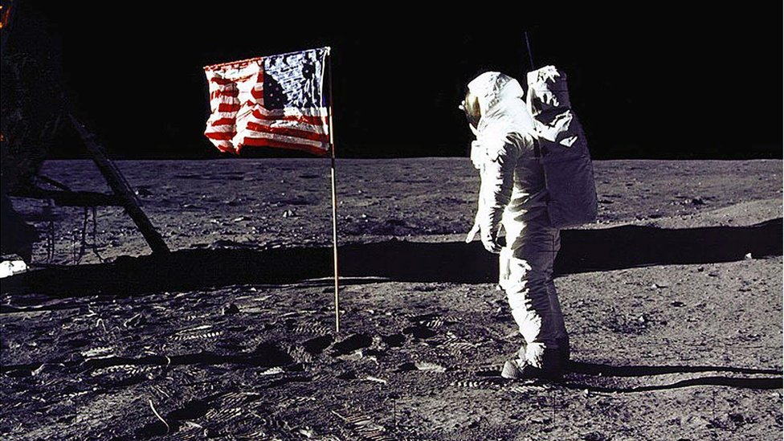

La luna
La Luna es un satélite natural que tiene la particularidad de ser el único en orbitar la Tierra. Con un diámetro ecuatorial de 3474,8 km, es el quinto satélite más grande del sistema solar, mientras que en cuanto al tamaño proporcional respecto a su planeta es el satélite más grande: un cuarto del diámetro de la Tierra y 1/81 de su masa. Es, además, después de Ío, el segundo satélite más denso. Se encuentra en relación síncrona con la Tierra, siempre mostrando la misma cara hacia el planeta. El hemisferio visible está marcado con oscuros mares lunares de origen volcánico entre las brillantes montañas antiguas y los destacados astroblemas.
A pesar de ser, en apariencia, el objeto más brillante en el cielo después del Sol, su superficie es en realidad muy oscura, con una reflexión similar a la del carbón. Su prominencia en el cielo y su ciclo regular de fases han hecho de la Luna un objeto con importante influencia cultural desde la antigüedad, tanto en el lenguaje como en el calendario, el arte o la mitología. La influencia gravitatoria de la Luna produce las mareas y el aumento de la duración del día. La distancia orbital de la Luna, cerca de treinta veces el diámetro de la Tierra, hace que se vea en el cielo con el mismo tamaño que el Sol y permite que la Luna cubra exactamente al Sol en los eclipses solares totales.

Luna casi llena vista desde la Tierra. Bélgica
Sección: Aterrizaje
La Luna es el único cuerpo celeste en el que el hombre ha realizado un descenso tripulado. Aunque el programa Luna de la Unión Soviética fue el primero en alcanzar la Luna con una nave espacial no tripulada, el programa Apolo de Estados Unidos realizó las únicas misiones tripuladas al satélite terrestre hasta la fecha, comenzando con la primera órbita lunar tripulada por el Apolo 8 en 1968, y seis alunizajes tripulados entre 1969 y 1972, siendo el primero el Apolo 11 en 1969, y el último el Apolo 17. Estas misiones regresaron con más de 380 kg de roca lunar, que han permitido alcanzar una detallada comprensión geológica de los orígenes de la Luna se cree que se formó hace 4 500 000 000 (cuatro mil quinientos millones) de años después de un gran impacto, la formación de su estructura interna y su posterior historia.
